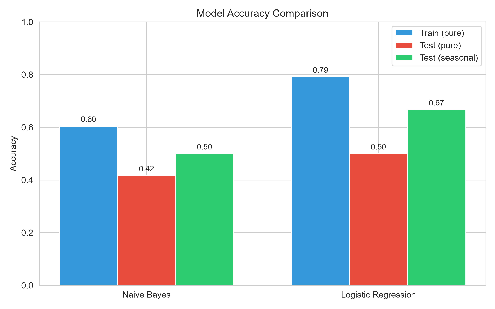
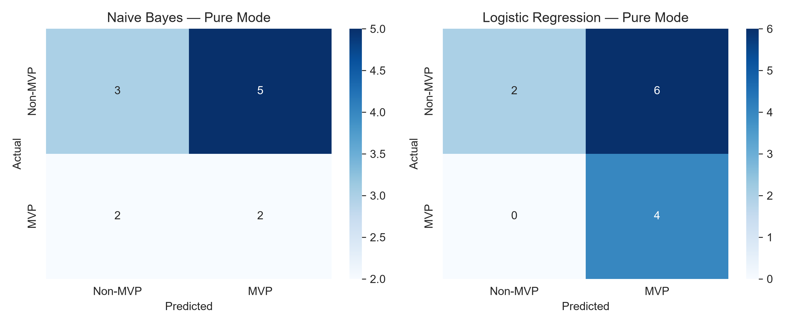
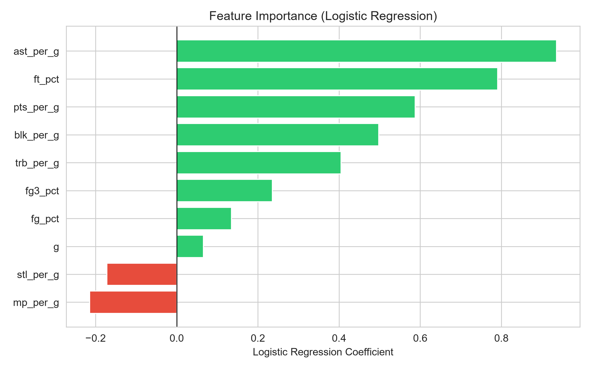

A comparison of Naive Bayes and Logistic Regression
The NBA MVP is voted by sportswriters, making the decision partly subjective. This project asks whether machine learning can predict the MVP using only objective season statistics, and compares a generative model (Naive Bayes) against a discriminative model (Logistic Regression).
Naive Bayes (GaussianNB): A probabilistic generative classifier that assumes feature independence. Fast and effective on small datasets.
Logistic Regression: A discriminative linear classifier that directly models the probability of the MVP class. Features were standardized before training.
Two evaluation modes:
Logistic Regression
| Model | Train (pure) | Test (pure) | Test (seasonal) |
|---|---|---|---|
| Naive Bayes | 60.4% | 41.7% | 50.0% |
| Logistic Regression | 79.2% | 50.0% | 66.7% |



Logistic Regression outperforms Naive Bayes, especially in seasonal mode. The top predictive features are assists, free-throw percentage, points, blocks, and rebounds. However, the small dataset (60 rows) limits generalization. Models also miss narrative factors such as team wins, media hype, and voter bias.
1. Basketball-Reference. NBA Player Stats. https://www.basketball-reference.com/
2. Kaggle. NBA Player Season Statistics with MVP Win Share. https://www.kaggle.com/datasets/robertsunderhaft/nba-player-season-statistics-with-mvp-win-share
3. scikit-learn documentation. https://scikit-learn.org/